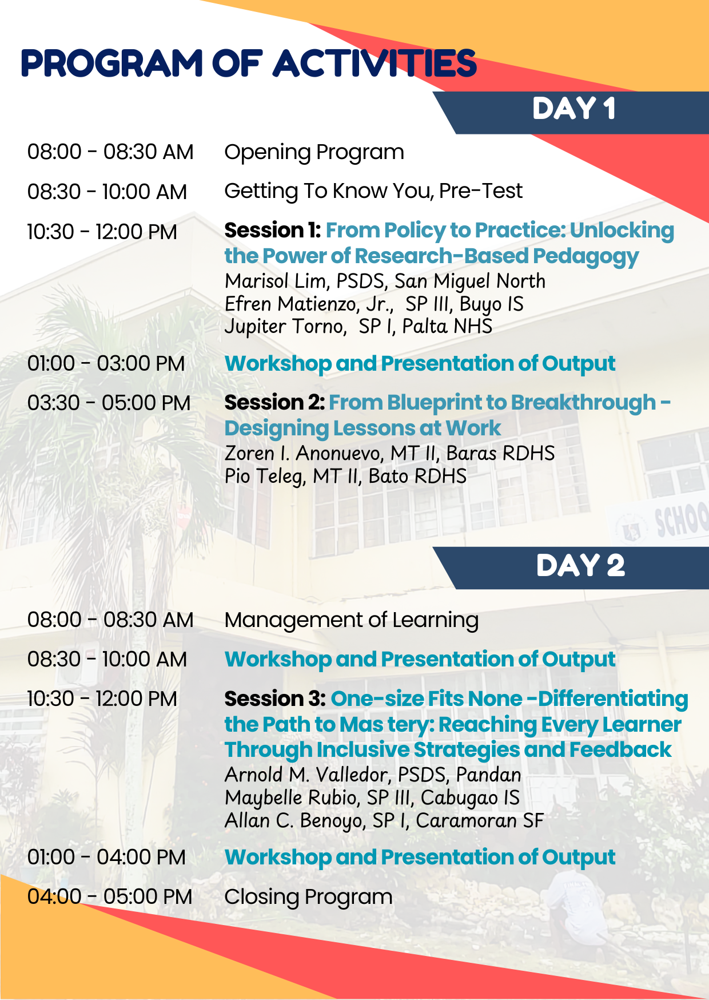

Schedule
| Batch | Date | Venue | Accreditation No. | CPD Units |
|---|---|---|---|---|
| Batch 1 | October 10-11, 2026 | Queen Maricel Inn, San Isidro Village, Virac, Catanduanes | PTR-2024-692-15175 | 7 |
| Batch 2 | October 17-18, 2026 | Queen Maricel Inn, San Isidro Village, Virac, Catanduanes | PTR-2024-692-15173 | 7 |
Learning Outcomes
At the end of the training, participants are expected to:
Target Participants
The profile of this participants:
| No. of Target Participants | No. of Actual Participants | Percentage of Actual VS Target |
|---|---|---|
| 100 |
Batch 1
| No | Batch | Name | District | School | Position |
|---|---|---|---|---|---|
| 1 | Batch 1 | Aileen Joy V. Matienzo | Bagamanoc South | Bagamanoc RDHS | Teacher III |
| 2 | Batch 1 | Andrew O. Aguinillo | Bagamanoc South | Bagamanoc RDHS | Teacher II |
| 3 | Batch 1 | John Edward I. Amaro | Bagamanoc South | Bagamanoc RDHS | Teacher I |
| 4 | Batch 1 | Melody M. Pelagio | Bagamanoc South | Bagamanoc RDHS | Teacher I |
| 5 | Batch 1 | Shirley S. Villaflor | Bagamanoc South | Bagamanoc RDHS | Teacher V |
| 6 | Batch 1 | Mary Grace B. Murillo | Bagamanoc South | Bagamanoc RDHS | Teacher V |
| 7 | Batch 1 | Mikaela T. Rima | Bagamanoc South | Bagamanoc RDHS | Teacher I |
| 8 | Batch 1 | Alvin T. Icaranom | Baras North | Agban NHS | Teacher II |
| 9 | Batch 1 | Cherry T. Romero | Baras North | Agban NHS | Teacher I |
| 10 | Batch 1 | Pamila Tenerife | Baras South | Baras RDHS | Teacher I |
| 11 | Batch 1 | Nilo B Gianan Jr | Bato East | Bato RDHS | Teacher II |
| 12 | Batch 1 | Angelyn C. Rodullo | Bato West | Cabugao IS | Teacher I |
| 13 | Batch 1 | Edwin S. Banaga | Bato West | Cabugao IS | Teacher II |
| 14 | Batch 1 | Irish V Gianan | Bato West | Cabugao IS | Teacher II |
| 15 | Batch 1 | Jessica S. Topue | Bato West | Cabugao IS | Special Science Teacher I |
| 16 | Batch 1 | Karen T. Balgemino | Bato West | Cabugao IS | Teacher V |
| 17 | Batch 1 | Karen T. Balgemino | Bato West | Cabugao IS | Teacher V |
| 18 | Batch 1 | Maria Romeolla V Gan See | Bato West | Cabugao IS | Teacher V |
| 19 | Batch 1 | Marilou T. Cabrera | Bato West | Cabugao IS | Teacher II |
| 20 | Batch 1 | Merly R.Sorilla | Bato West | Cabugao IS | Teacher II |
| 21 | Batch 1 | Ailene D. Sambrano | Caramoran North | Caramoran RDHS | Teacher III |
| 22 | Batch 1 | Joven S. Dellova | Caramoran North | Dariao NHS | Teacher I |
| 23 | Batch 1 | Ma. Czarina R. Salamena | Caramoran North | Dariao NHS | Teacher I |
| 24 | Batch 1 | Maria Francia E. Ledda | Caramoran North | Dariao NHS | Teacher I |
| 25 | Batch 1 | Rochelle R. Bagadiong | Caramoran North | Tubli NHS | Teacher V |
| 26 | Batch 1 | Joy D. Tabios | Caramoran South | Caramoran School of Fisheries | Teacher VI |
| 27 | Batch 1 | Laverne C. Yutan | Caramoran South | Caramoran School of Fisheries | Teacher III |
| 28 | Batch 1 | Marjorie L. Sarmiento | Caramoran South | Caramoran School of Fisheries | Teacher III |
| 29 | Batch 1 | Gerald T. Tuno | Caramoran South | Caramoran School of Fisheries | Teacher III |
| 30 | Batch 1 | Ma.Zenia R. Candelaria | Caramoran South | Caramoran School of Fisheries | Teacher II |
| 31 | Batch 1 | Marevic Z. Garcia | Caramoran South | Caramoran School of Fisheries | Teacher II |
| 32 | Batch 1 | Melanie D. Rojas | Caramoran South | Caramoran School of Fisheries | Teacher I |
| 33 | Batch 1 | Renalyn T. Silva | Caramoran South | Caramoran School of Fisheries | Teacher II |
| 34 | Batch 1 | Sherline Mae T. Ternida-Santos | Caramoran South | Caramoran School of Fisheries | Teacher II |
| 35 | Batch 1 | Marlene M. Gianan | Caramoran South | Supang-Datag NHS | Teacher II |
| 36 | Batch 1 | Jeraldine Vito Surbano | Caramoran South | Caramoran School of Fisheries | Teacher I |
| 37 | Batch 1 | Jeny Sorral Magallanes | Caramoran South | Supang-Datag NHS | Teacher I |
| 38 | Batch 1 | Joshua Lloyd P. Orgaya | Gigmoto | Dororian NHS | Teacher III |
| 39 | Batch 1 | Ariel R. Tanael | Gigmoto | Gigmoto RDHS | Teacher III |
| 40 | Batch 1 | Ira Joshua M. Bernal | Gigmoto | Gigmoto RDHS | Teacher I |
| 41 | Batch 1 | Donnel V. Usero | Panganiban | Panganiban NHS | Teacher II |
| 42 | Batch 1 | Roselle P. Collantes | Panganiban | Panganiban NHS | Teacher II |
| 43 | Batch 1 | Vilma D.Cayobit | Panganiban | Panganiban NHS-CC | Teacher II |
| 44 | Batch 1 | Mary Jane M. Valledor | Panganiban | Panganiban NHS-CC | Teacher III |
| 45 | Batch 1 | Pamela Jane V. Masagca | San Andres East | SAVS | Teacher VI |
| 46 | Batch 1 | Rowena A. Bonete | San Andres West | Maygnaway NHS | Teacher II |
| 47 | Batch 1 | Shyril R. Melgar | San Andres West | Maygnaway NHS | Teacher III |
| 48 | Batch 1 | Josielyn Bien Beraquit | San Andres West | Mayngaway NHS | Teacher III |
| 49 | Batch 1 | Jerome F. Tindugan | Virac North | Buyo IS | Teacher II |
| 50 | Batch 1 | Jean Buena Crispino | Virac North | Calatagan High School | Teacher II |
Batch 2
| No | Batch | Name | Municipality | School | Position |
|---|---|---|---|---|---|
| 1 | Batch 2 | Marjonie T Tomagan | San Andres West | Maygnaway NHS | Teacher III |
| 2 | Batch 2 | Maria Remy Tenerife Romero | San Andres West | Mayngaway NHS | Teacher II |
| 3 | Batch 2 | Dominick Dayawon | San Miguel North | Mabato NHS | Teacher I |
| 4 | Batch 2 | Edmond T. De Nava | San Miguel North | Mabato NHS | Teacher II |
| 5 | Batch 2 | Karen Ann A. Taule | San Miguel North | Mabato NHS | Teacher II |
| 6 | Batch 2 | Maritess T. Tolentino | San Miguel North | Mabato NHS | Teacher ll |
| 7 | Batch 2 | Marjorie T. Vargas | San Miguel North | Mabato NHS | Teacher VI |
| 8 | Batch 2 | Sheena Mae M. Samar | San Miguel North | Mabato NHS | Teacher I |
| 9 | Batch 2 | Vivien T. Tolledo | San Miguel North | Mabato NHS | Teacher II |
| 10 | Batch 2 | Mark Daniel A. Sto. Tomas | San Miguel North | Mabato NHS | Teacher I |
| 11 | Batch 2 | Benedict T. Bernal | San Miguel North | Mabato NHS | Teacher II |
| 12 | Batch 2 | Klyne T. Bongalon | Viga West | San Jose NHS | Teacher II |
| 13 | Batch 2 | Kristine V Tivar | Viga West | San Jose NHS | Teachet II |
| 14 | Batch 2 | Mark Q. Magno | Viga West | San Jose NHS | Teacher I |
| 15 | Batch 2 | Sherilyn M. De Jesus | Viga West | San jose NHS | Teacher I |
| 16 | Batch 2 | Grace C. Temanil | Viga West | San Jose NHS | Teacher II |
| 17 | Batch 2 | Nanette D. Tejerero | Virac | Calatagan HS | Teacher VI |
| 18 | Batch 2 | Cheryl Vallejo | Virac | Catanduanes NHS | |
| 19 | Batch 2 | Sharon T. Castilla | Virac | Catanduanes NHS | Teacher V |
| 20 | Batch 2 | Richel T. Bagadiong | Virac | Palta NHS | Teacher II |
| 21 | Batch 2 | Jean I. Ong | Virac North | Buyo IS | Teacher II |
| 22 | Batch 2 | Kimberly Grace B. Crispino | Virac North | Buyo IS | Teacher II |
| 23 | Batch 2 | Shirley Jane M. Molina | Virac North | Buyo IS | Teacher I |
| 24 | Batch 2 | Wendy T. Alberto | Virac North | Buyo IS | Teacher I |
| 25 | Batch 2 | Maria Arlen T Rodolfo | Virac North | Calatagan High School | Teacher II |
| 26 | Batch 2 | Raissa A. Del Valle | Virac North | Calatagan High School | Teacher II |
| 27 | Batch 2 | Richard M. Pacora | Virac North | Calatagan High School | Teacher II |
| 28 | Batch 2 | Jobelle P Alintana | Virac North | Calatagan High School | Teacher III |
| 29 | Batch 2 | Ma. Veronique Y. Molod | Virac North | Calatagan High School | Special Science Teacher I |
| 30 | Batch 2 | Sheena Mae Pegate Tresmanio | Virac North | Calatagan High School | Teacher I |
| 31 | Batch 2 | Anne Marionne A. Osila | Virac North | Catanduanes NHS | Teacher II |
| 32 | Batch 2 | Bea T. Cruz | Virac North | Catanduanes NHS | Teacher IV |
| 33 | Batch 2 | Christine Phoebe C. Bien | Virac North | Catanduanes NHS | Teacher I |
| 34 | Batch 2 | Jhon Paulo M. Gianan | Virac North | Catanduanes NHS | Teacher V |
| 35 | Batch 2 | Ma. Nel T. Alcanatara | Virac North | Catanduanes NHS | Teacher I |
| 36 | Batch 2 | Noreen M. Uchi | Virac North | Catanduanes NHS | Teacher VI |
| 37 | Batch 2 | Protacio G. Arcilla Iii | Virac North | Catanduanes NHS | Teacher I |
| 38 | Batch 2 | Shinette T Oliveros | Virac North | Catanduanes NHS | Teacher V |
| 39 | Batch 2 | Aldrin T. Manlangit | Virac North | Catanduanes NHS | Teacher II |
| 40 | Batch 2 | Ma. Mirasol V. Triumfante | Virac North | Buyo IS | Teacher V |
| 41 | Batch 2 | Marife Talan Sacris | Virac North | Buyo IS | Teacher III |
| 42 | Batch 2 | Lyra V. Ogalesco | Virac North | Calatagan High School | Teacher I |
| 43 | Batch 2 | Marigen T. Tablizo | Virac South | Antipolo NHS | Teacher V |
| 44 | Batch 2 | Maricon T. Parro | Virac South | Hawan NHS | Teacher II |
| 45 | Batch 2 | Marieta P. Barayoga | Virac South | Hawan NHS | Teacher II |
| 46 | Batch 2 | Gina T. Diaz | Virac South | Palta NHS | Teacher VI |
| 47 | Batch 2 | Concepcion P. Naag | Virac South | Palta NHS | Teacher II |
| 48 | Batch 2 | Ingrid Sabrina P. Martinez | Virac South | Palta NHS | Teacher II |
| 49 | Batch 2 | Ma. Suzittes. Tacorda | Virac South | Palta NHS | Teacher II |
| 50 | Batch 2 | Marianne G. Herrera | Virac South | Palta NHS | Teacher III |
